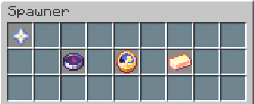
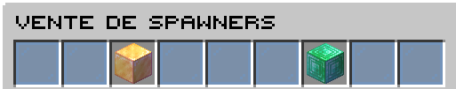
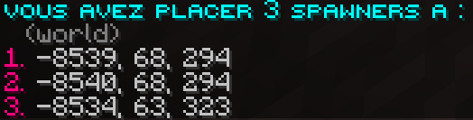
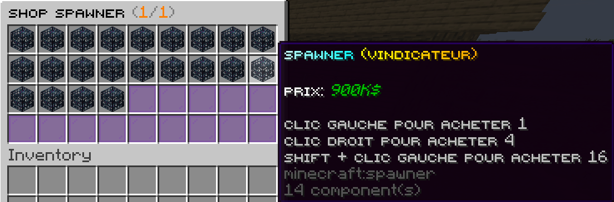
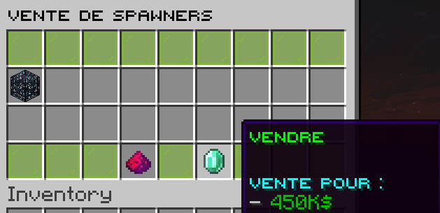
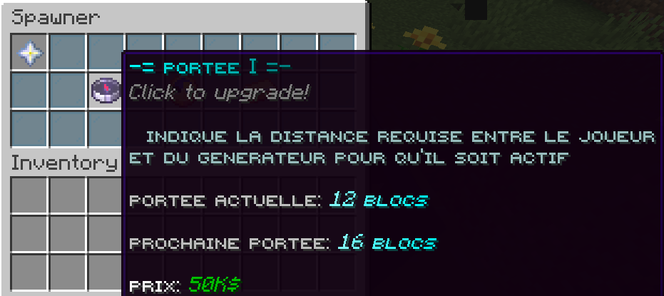
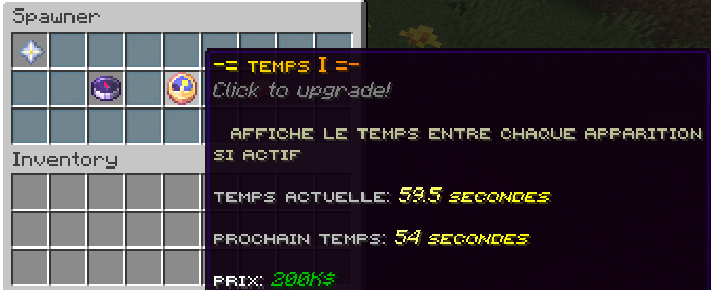
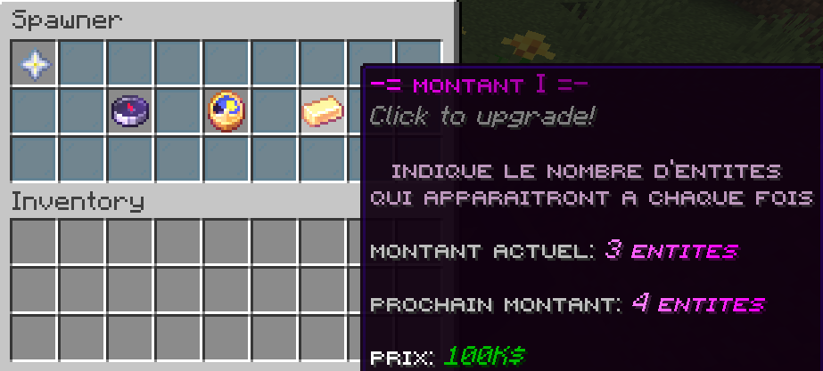
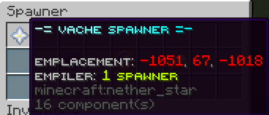

Les spawners possèdent plusieurs particularités intéressantes qui les rendent encore plus puissants.
Ils peuvent être améliorés afin d’augmenter leurs performances et d’optimiser la génération des créatures.
Il est également possible de les stacker, c’est-à-dire d’en placer plusieurs sur un même bloc, sans aucune perte d’efficacité.
Cette fonctionnalité permet de gagner de l’espace, d’optimiser vos farms et de maximiser votre production tout en conservant un système compact et performant.

Plusieurs commandes sont disponibles pour gérer vos spawners :
La commande /spshop vous permet d’acheter ou de vendre des spawners directement depuis la boutique dédiée.
La commande /spawnertrust add [player] vous permet de faire confiance à un joueur, ce qui lui donne l’autorisation d’interagir avec vos spawners selon les permissions accordées.
Enfin, la commande /spawnerlocations vous permet d’obtenir les coordonnées de tous vos spawners et de voir combien vous en possédez, facilitant ainsi leur gestion et leur organisation.
Ces commandes vous offrent un contrôle complet sur vos spawners, que ce soit pour les administrer, les partager ou les localiser rapidement.


Vous pouvez acheter différents spawners grâce à la commande /spshop.
Les prix varient en fonction du type de spawner, certains étant plus rares ou plus rentables que d’autres.
Il est donc conseillé de comparer les options disponibles afin de choisir le spawner le plus adapté à votre budget et à votre stratégie de farm.

Vous pouvez également revendre vos spawners à tout moment via la boutique.
Attention cependant : le prix de revente correspond à 50 % du prix d’achat.
Les améliorations appliquées au spawner sont elles aussi remboursées à hauteur de 50 % de leur coût total.
Il est donc conseillé de bien anticiper vos investissements avant d’améliorer ou de revendre un spawner, afin de maximiser votre rentabilité.

La première amélioration permet d’augmenter la portée d’activation du spawner.
Son coût initial est de 50.000$, puis 25.000$ supplémentaires par niveau sont ajoutés à chaque amélioration.
En élargissant la zone d’activation, vous facilitez le fonctionnement du spawner, notamment lorsque vous gérez plusieurs installations en même temps.

La deuxième amélioration permet de réduire le temps d’attente entre chaque apparition du spawner.
Son coût initial est de 200.000$, puis 100.000$ supplémentaires par niveau sont ajoutés à chaque amélioration.
En diminuant l’intervalle d’apparition, cette upgrade augmente la fréquence de génération et améliore donc la productivité globale de votre spawner.

La troisième et dernière amélioration permet d’augmenter le nombre d’entités générées à chaque apparition du spawner.
Son coût de départ est de 100.000$, puis 50.000$ supplémentaires par niveau sont ajoutés à chaque amélioration.
Plus vous investissez dans cette upgrade, plus la production devient importante, ce qui peut fortement améliorer votre rentabilité à long terme.

Vous pouvez également empiler les spawners, c’est-à-dire en placer plusieurs sur un même bloc sans perdre en efficacité.
Cette mécanique permet d’optimiser l’espace tout en augmentant la production.
Attention cependant : les améliorations (upgrades) s’additionnent elles aussi, ce qui peut augmenter considérablement la puissance… mais également le coût total.
